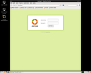
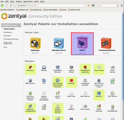
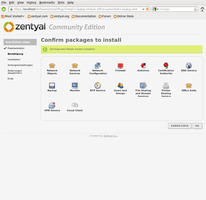
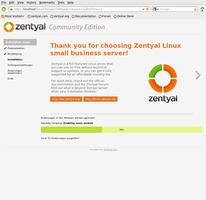
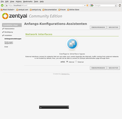
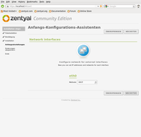
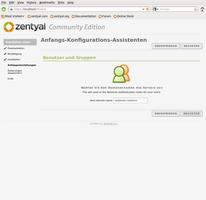
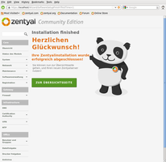
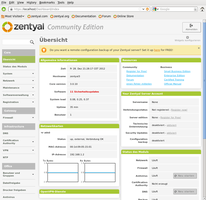
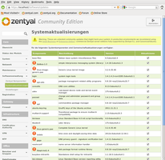

CD-Installation
Dieser Artikel wurde für die folgenden Ubuntu-Versionen getestet:
Ubuntu 14.04 Trusty Tahr
Artikel für fortgeschrittene Anwender
Dieser Artikel erfordert mehr Erfahrung im Umgang mit Linux und ist daher nur für fortgeschrittene Benutzer gedacht.
Zum Verständnis dieses Artikels sind folgende Seiten hilfreich:
Dieser Artikel dient als Ergänzung des bestehenden Artikels Zentyal, dessen Lektüre vor der Installation empfohlen wird. Es gibt mehrere Wege, Zentyal zu installieren. Im Folgenden wird der Weg mittels der Installations-CD beschrieben, deren ISO-Abbild direkt vom Hersteller  oder über SourceForge heruntergeladen (ca. 700 MiB) und gebrannt [1] werden muss.
oder über SourceForge heruntergeladen (ca. 700 MiB) und gebrannt [1] werden muss.
Anschließend bootet man den vorgesehenen Rechner von dieser CD. Bei dieser Installationsart steht Einsteigern für die Serververwaltung eine minimale grafische Desktop-Umgebung (LXDE) zusätzlich zur Kommandozeile zur Verfügung.
Hinweis:
Dieser Artikel ist auf Basis der Community-Version 3.0 entstanden. Diese wurde mit Version 4.0 in "Zentyal Server Development Version" umbenannt.
Ab Zentyal 4.0 werden nur noch 64-bit-Systeme unterstützt. Ältere Versionen gab es auch für 32-bit-Systeme.
Installation¶
 Zur Installation wird die Nutzung eines Monitors sowie einer Tastatur und einer Maus empfohlen, die später wieder entfernt werden können. Die eigentliche Verwaltung des Servers erfolgt (nach Abschluss der Installation) über eine Weboberfläche.
Zur Installation wird die Nutzung eines Monitors sowie einer Tastatur und einer Maus empfohlen, die später wieder entfernt werden können. Die eigentliche Verwaltung des Servers erfolgt (nach Abschluss der Installation) über eine Weboberfläche.
Gliedern lässt sich die Installation in zwei Teile:
Installation des Basissystems im Textmodus
Systemkonfiguration im Grafikmodus

Textmodus¶
Auswahl der Sprache
Auswahl der Tastaturbelegung
Wenn der Rechner bereits mit dem lokalen Netzwerk verbunden ist, erfolgt die automatische Konfiguration via DHCP im Hintergrund. Ansonsten legt man hier die IP-Adresse, die Netzmaske und das Gateway fest.Eingabe des Rechnernamens
optional: Eingabe eines vorhandenen Zentyal-Accounts (E-Mail-Adresse)
Eingabe des späteren Administratornamens (bitte nicht
adminoderroot, da einige Namen unter Ubuntu reserviert sind)Eingabe des Administrator-Kennworts (2x)
Auswahl der Zeitzone (die Standardeinstellung wird entsprechend der Sprache vorgeschlagen)
Festplatte(n) partitionieren (siehe Partitionierung)
Ab Zentyal 3.2: Verzicht auf eine minimale grafische Oberfläche? (ja/nein)
Nun erfolgt die Installation des Grundsystems - Zeit für eine kleine Pauseoptional: Eingabe der Proxy-Daten (falls der Internetzugang über einen solchen erfolgt)
Einspielen von (Zentyal-)Updates und Spracheinstellungen
Zeit für eine weitere PauseInstallation des Bootmanagers GRUB 2
Abschluss der Installation (Vorkonfiguration etc.)
Stellen der Systemuhr: UTC (empfehlenswert) oder lokale Zeit
Nun wird man aufgefordert, die Installations-CD aus dem Laufwerk zu entfernen und den Rechner neu zu starten.

Grafisch¶
Beim ersten Neustart nach der Installation im Textmodus erfolgen weitere Paket-Aktualisierungen, wodurch sich dieser etwas hinziehen kann. Einfach in Ruhe abwarten, bis die grafische Oberfläche geladen ist (diese entspricht wie bei den Vorgängern einer rudimentären LXDE-Desktopumgebung). Der zweite Teil der Installation erfolgt bereits im Browser bzw. über die Weboberfläche. Jetzt mit dem eingangs erstellten Administratorkonto anmelden. Das weitere Vorgehen ist der nachfolgenden Bildersammlung zu entnehmen.
|  |
| 1. Server-Funktionen auswählen |
|  |
| 2. Bestandteile Office-Server |
|  |
| 3. Funktionen installieren |
|  |
| 4. Netzwerk konfigurieren |
|  |
| 5. Netzwerkkarte konfigurieren |
|  |
| 6. Domainname |
| 7. Server registrieren (optional) |
|  |
| 8. Installation abgeschlossen |
|  |
| 9. Übersichtseite (Dashboard) |
|  |
| 10. Sicherheitsaktualisierungen |
Abschluss¶
Nach dem Einspielen der letzten Sicherheitsaktualisierungen aus den offiziellen Paketquellen von Ubuntu kann man den Server zum Transport an den endgültigen Standort herunterfahren. Je nach Hardware sollte man vorher im BIOS evtl. noch kontrollieren, ob der Rechnerstart auch ohne Tastatur erfolgt. Monitor, Tastatur und Maus werden anschließend nicht mehr benötigt.
 - alternative Download-Quelle
- alternative Download-Quelle- Erstellt mit Inyoka
-
 2004 – 2017 ubuntuusers.de • Einige Rechte vorbehalten
2004 – 2017 ubuntuusers.de • Einige Rechte vorbehalten
Lizenz • Kontakt • Datenschutz • Impressum • Serverstatus -
Serverhousing gespendet von